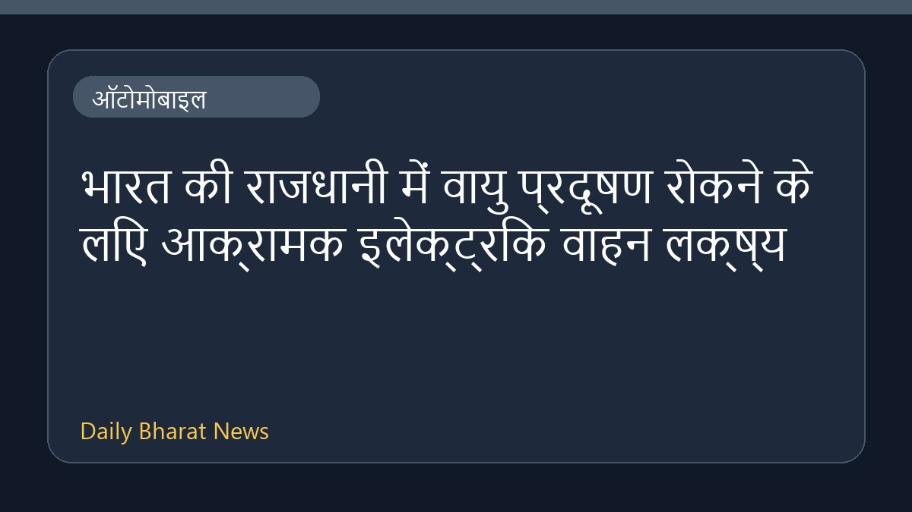

भारत की राजधानी में वायु प्रदूषण रोकने के लिए आक्रामक इलेक्ट्रिक वाहन लक्ष्य

वायु प्रदूषण को नियंत्रित करने के एक महत्वपूर्ण प्रयास के तहत, भारत की राजधानी को आक्रामक इलेक्ट्रिक वाहन लक्ष्यों में शामिल किया गया है। एसोसिएटेड प्रेस की रिपोर्ट के अनुसार, इस पहल का उद्देश्य बढ़ते प्रदूषण स्तर से निपटना और इलेक्ट्रिक वाहनों के उपयोग को तेज़ी से बढ़ावा देना है। इस संबंध में उपलब्ध विवरण अभी सीमित हैं, लेकिन यह कदम राजधानी क्षेत्र में पर्यावरण सुधार की दिशा में एक बड़ा प्रयास माना जा रहा है।
मूल स्रोत: Automobile News Sources
India’s capital part of aggressive electric vehicle targets in bid to curb air pollution - AP News ↗
India’s capital part of aggressive electric vehicle targets in bid to curb air pollution - AP News ↗